Crocheting is a craft where you create fabric by using a crochet hook to
interlock loops of yarn, thread, or other materials. It's similar
to knitting but uses a single hook instead of two needles. The basic
process starts by making a loop (called a slip knot), then pulling yarn
through the loop to create stitches. The most common stitches include
the chain stitch, single crochet, double crochet, and slip stitch. By
combining these stitches in different patterns, you can make all sorts
of things like blankets, hats, scarves, bags, or even toys (called
amigurumi). Crocheting can be done with different types of yarn, ranging
from thick and chunky to thin and delicate. The size of the crochet hook
and the thickness of the yarn will affect how tight or loose the
stitches are, and the overall look of your project. It's a versatile
hobby that's great for beginners and advanced crafters alike. Crocheting
can be very relaxing and is often used as a way to unwind while creating
something useful or beautiful. Many people enjoy crocheting because they
can easily carry their projects with them and work on them anywhere.
Plus, you can personalize your projects by choosing your own colors,
yarn textures, and designs.
About My Experience
This summer, I decided to try something new and started crocheting.
I've always enjoyed arts and crafts, so I thought it would be a fun
and creative hobby to pick ut. To get started, I bought a crochet set
from Amazon, which came with everything I needed – a few crochet
hooks, yarn, and other tools. At first, it was a bit tricky. The
movements of the crochet hook felt unfamiliar, and following patterns
seemed confusing. But I didn't give up. I turned to YouTube for
help, watching tutorials that guided me step by step through the
process. Slowly but surely, I got the hang of it, and things became much
easier.One of the first projects I completed was making two little
loaves of bread with faces on them. It felt so rewarding to see them
take shape as I worked. The sense of accomplishment from finishing
something I created with my own hands was amazing. I also found that
crocheting was very relaxing. Whenever I was working on a project, I
felt calm and focused, and it became a great way to unwind after a long
day. Overall, crocheting has been such an enjoyable hobby for me. Not
only is it a fun way to get creative, but it's also a perfect way
to relax and de-stress.
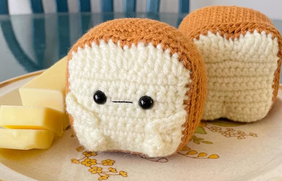
Results were the same, except mine are happier
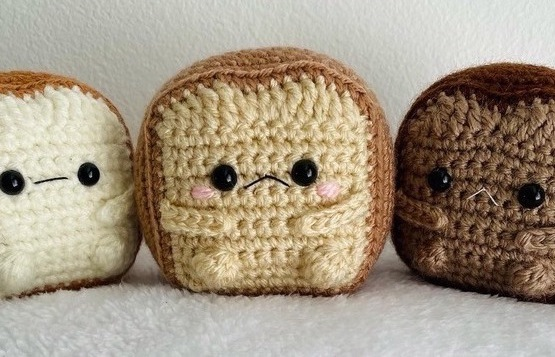
Mine also had blush
Slip Knot: The starting point for most crochet projects.
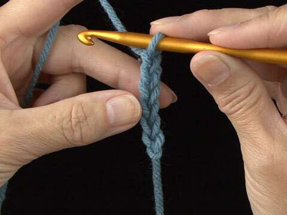
Chain Stitch (ch): The basic building block of crochet.
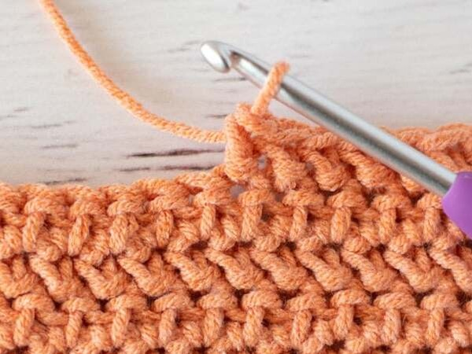
Half Double Crochet (hdc): Taller than single crochet, offering a
looser fabric.
Advanced Crochet Techniques
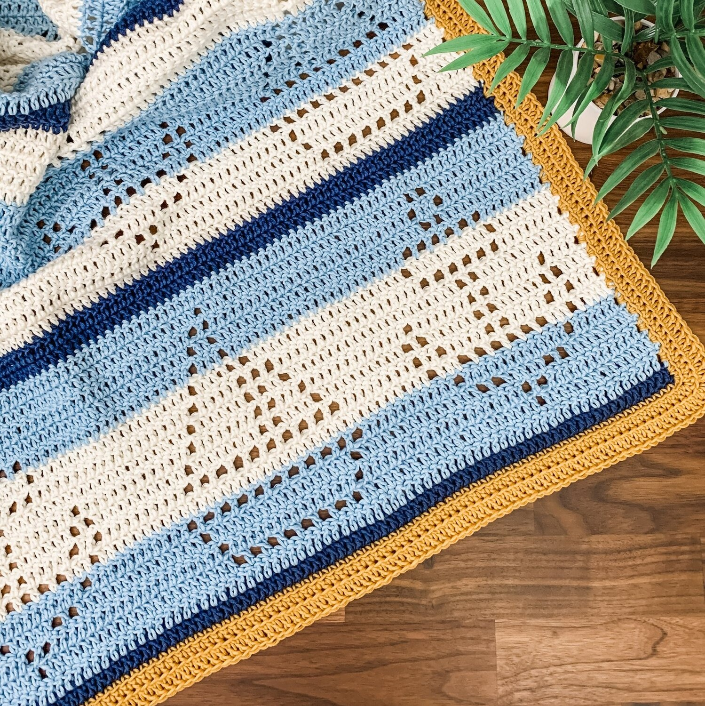
Filet Crochet: Uses filled and empty squares to form images within the
fabric.
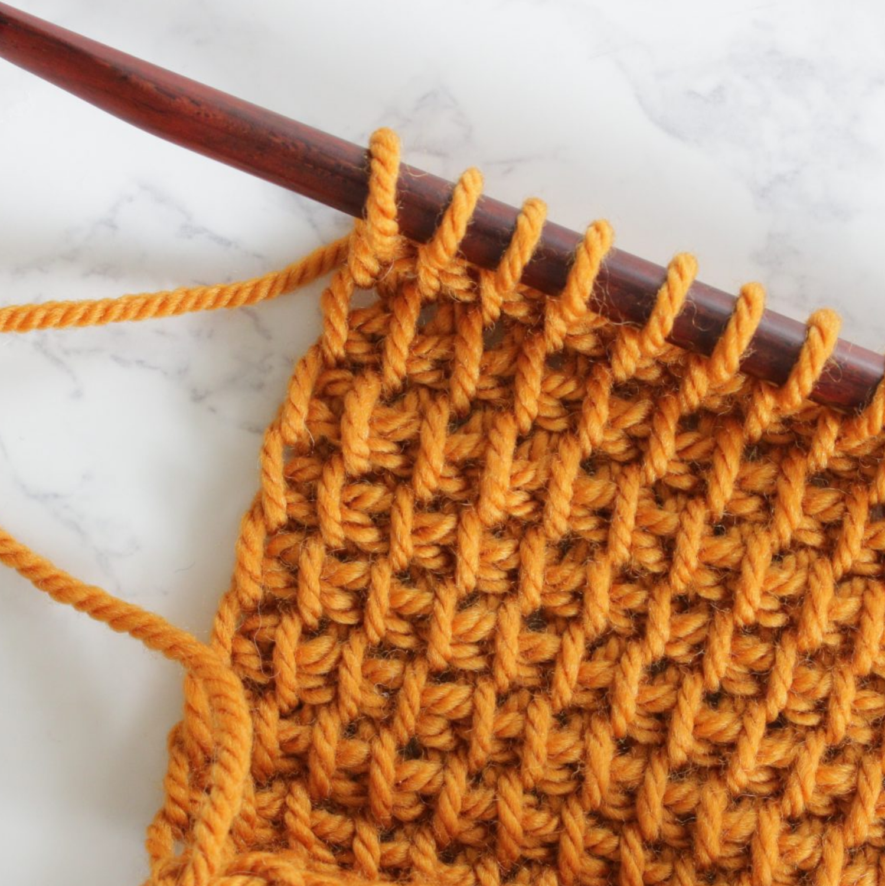
Tunisian Crochet: Combines elements of knitting and crocheting, using
a long hook to create dense fabrics.
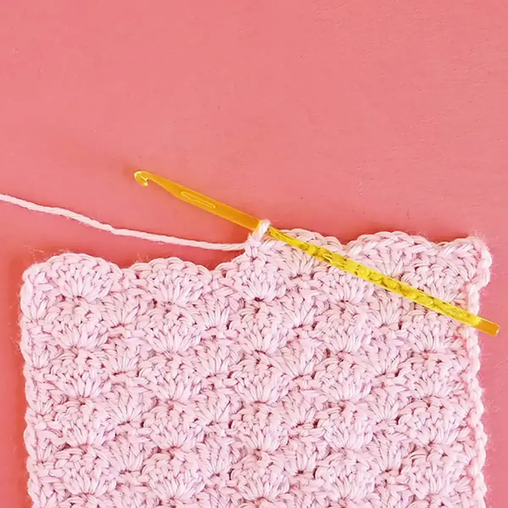
Shell Stitch: Involves multiple stitches worked into a single stitch
for a decorative look.
Textured Stitches
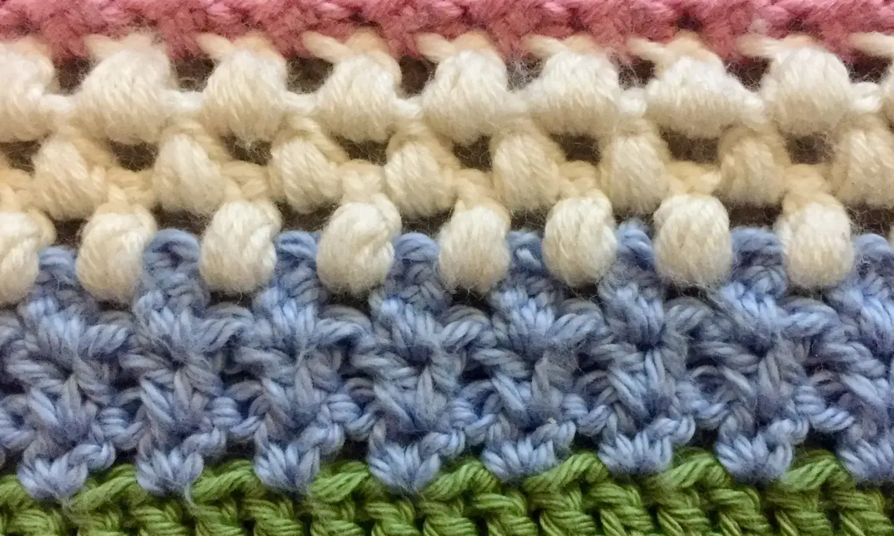
Moss Stitch: A combination of single crochet and chain stitches that
results in a textured fabric.
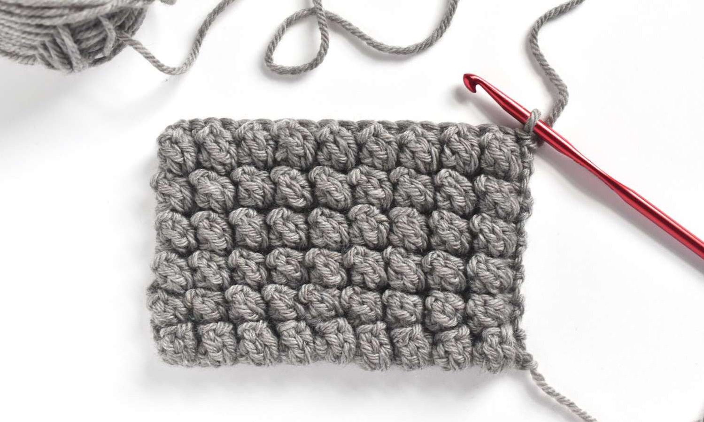
Popcorn Stitch: Creates raised clusters that add dimension to the
fabric.
Types of Crochet
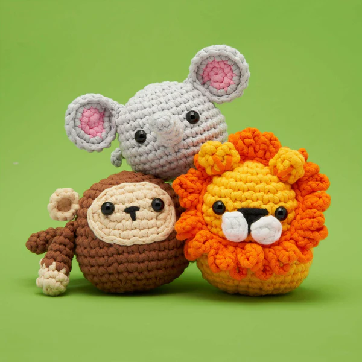
Amigurumi: Focuses on creating stuffed toys and figures.
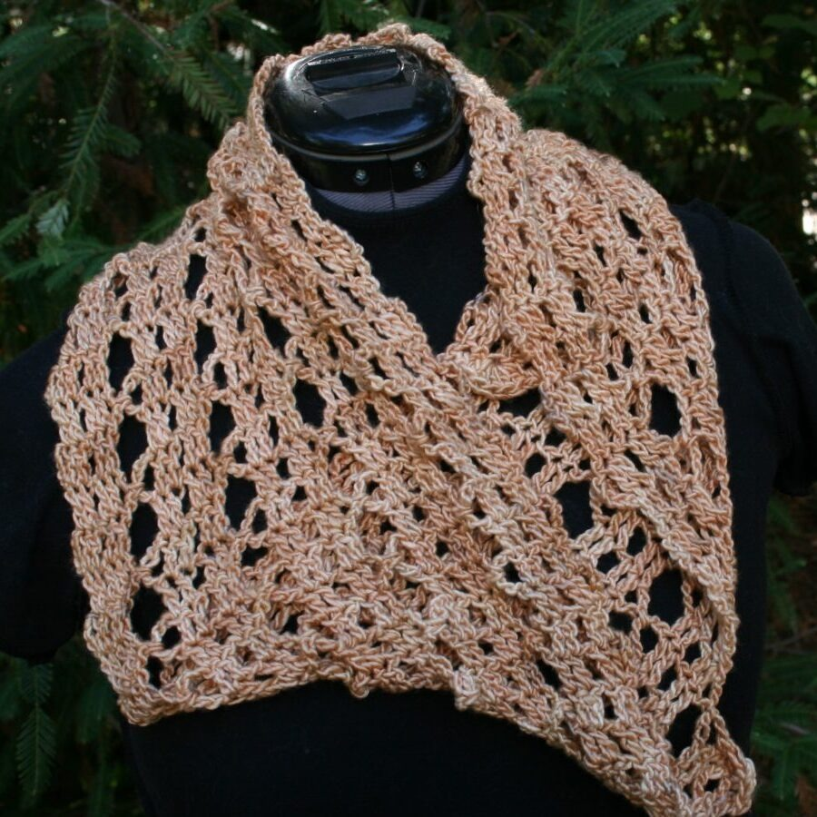
Bruges Lace: Involves intricate lace patterns with ribbons of crochet.
Fair Isle Crochet: This technique uses multiple colors in one row.
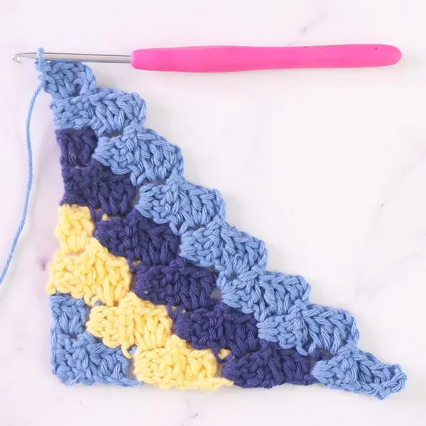
C2C: Involves working diagonally from one corner to the opposite
corner.